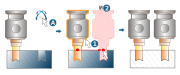
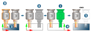
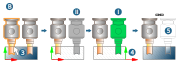
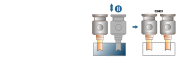

16.7. Virtual electrode
Create virtual electrodes from a master electrode → | Electrode |
Create one or several virtual electrodes from an existing electrode, the ‘master electrode’. This prevents identical electrodes from repeatedly appearing physically in the model, that is, as a group. Instead, a master electrode is managed with reference to virtual electrodes. This way, the same electrode can be programmed for erosion in different positions.
How is a virtual electrode created?
Call the Move / copy
 command. Select the master electrode
command. Select the master electrode  . Make sure to select the entire electrode. For this purpose, activate on the Selection tab the selection of an entire group as an entity.
. Make sure to select the entire electrode. For this purpose, activate on the Selection tab the selection of an entire group as an entity.This will create copies of the master electrode, set up as a group in the model tree. Note that this is not an electrode, but only a group containing all the information about the master electrode.
Note
Only one copy per copy process can be created, regardless of the number set under Copy

It is checked whether a copy collides with the workpiece geometry. A warning is output on the Info tab.
All entities – the master electrode and its copies – are locked. To unlock, the copies must be unlocked first. The master electrode can be unlocked only after.
If a machine head is assigned to the master electrode, this machine head and its C-axis are fully displayed as unrotated in the preview during rotation. This only applies to this preview! During the collision check, the C-axis geometry is rotated as desired and the rest of the machine head geometry is regarded as fixed .
Then, call the Virtual electrode command
 . Select a master electrode using Electrode. Other entities cannot be selected. Select a copy from the table. Change its status to Virtual and select the reference system
. Select a master electrode using Electrode. Other entities cannot be selected. Select a copy from the table. Change its status to Virtual and select the reference system  . The copy is “virtualized”, and its color changes. Information on this electrode is added to the master electrode. Upon exiting the command, virtual electrodes are hidden, both in the graphics area and on the Model tab
. The copy is “virtualized”, and its color changes. Information on this electrode is added to the master electrode. Upon exiting the command, virtual electrodes are hidden, both in the graphics area and on the Model tab  .
.To unhide a virtual electrode and change its status, run the Virtual electrode command and select the master electrode using the Electrode option. The virtual electrodes are displayed again. The status and reference system can be changed.

With the Derive, Derive and milling and Export reports commands, all information about the virtual electrodes is output.
The following changes are made when unlocking a master electrode:
Regarding the copy: The copies are unlocked, all tags related to this command are removed, and the layers change back. The warning “The electrode is unlocked and not more an virtual electrode!” is displayed.
For the master electrode: the electrode is unlocked, and all tags related to this command are removed. This includes tags with information on the virtual electrodes, which no longer exist as a result. The warning “The electrode is unlocked and all virtual electrodes are removed!” is displayed.
The following changes are made when unlocking a copy:
Regarding the copy: the layers change back, and tags related to the command are removed. The warning “The electrode is unlocked and not more an virtual electrode!” is displayed.
For the master electrode: Tags related to the command are removed. The electrode is unlocked when there are no more copies or virtual electrodes that belong to it.
When mirroring, a normal electrode is created from a virtual electrode.
Select master electrode
Electrode: Select a master electrode  .
.
Virtual electrodes
Column | Purpose |
|---|---|
Name | Name of entity. |
Transform | Displays the position of the reference point and the orientation with respect to the master electrode in the world workplane. |
Status | Modify the status of the electrode. This can be done repeatedly.
|
Status | Delete: Delete the virtual electrode. Display temporarily changes to red . |
Reference system | Select a reference system if multiple reference systems are defined for the virtual electrode's machining side |